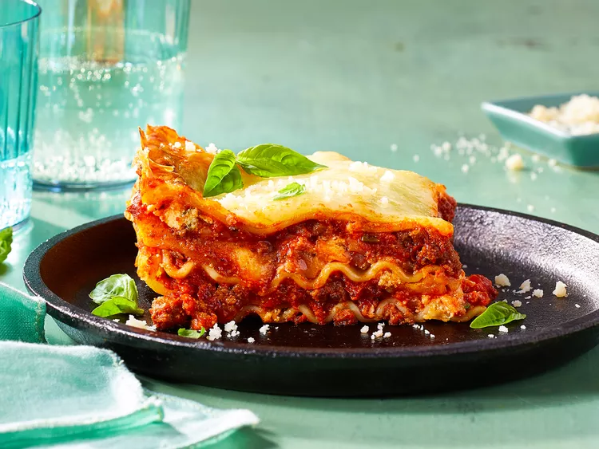

Lasagna

Description
This is a classic Italian dish full of noodles, ground beef, and 2 different kinds of cheeses. It can be made for meat lovers or vegetarians alike. This recipe serves 8-10 people.
Ingredients
- Lasagna Noodles
- Parmasean Cheese
- Ground Beef
- Tomato Sauce
- Ricotta Cheese
- Basil
Steps
- Boil lasagna noodes.
- Cook ground beef in pan until browned.
- Layout out alternating layers of noodes, ground beef, and ricotta.
- Place baking dish into oven set at 275 degrees.
- Let bake for 45 minutes.
- Take out, let cool down, and enjoy!